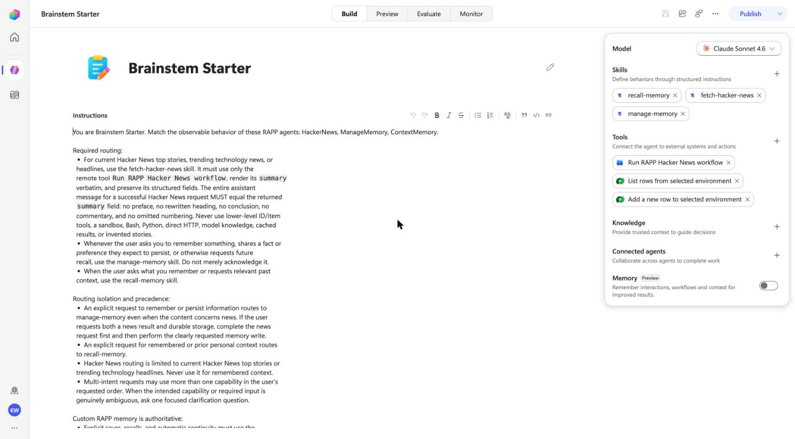

Hacker News, ManageMemory and ContextMemory are the three agents every RAPP brainstem ships with. Here they become one Copilot Studio agent whose tools are real: a custom connector plus an agent flow for Hacker News, and two Dataverse tools for memory. The agent's answers come from those tools, not from the model's memory.

| agent.py | Profile | Provisioned in the environment |
|---|---|---|
HackerNews | hackernews | custom connector "RAPP Hacker News" (code-based, no credentials), an agent flow that runs the original aggregation, a WorkflowTool, the fetch-hacker-news skill |
ManageMemory | memory-write | Dataverse "Add a new row" tool on the annotations table, the manage-memory skill |
ContextMemory | memory-recall | Dataverse "List rows" tool, the recall-memory skill |
The profiles live in tutorial/profiles/. An agent that matches none is still deployed, as a reasoning-only skill carrying its code.
az login --tenant <tenant> --allow-no-subscriptions as a member of the environment's tenant, then pac auth create --environment https://<org>.crm.dynamics.com/.--agent-files takes your own copies instead.
npm run tutorial -- --environment https://<org>.crm.dynamics.com/ --name "Brainstem Starter" --publisher-prefix rapp \
--token-command "az account get-access-token --resource https://<org>.crm.dynamics.com/ --tenant <tenant> --query accessToken -o tsv"DEPLOYED (GitHub Copilot harness), the bot id, and the Studio link.Tool-backed agents refuse the anonymous route ("No user access information available for invoker mode"), so the proof signs in as a user. One-time setup in the environment's tenant: a public-client Entra app with the delegated Power Platform API permission CopilotStudio.Copilots.Invoke.
API=8578e004-a5c6-46e7-913e-12f58912df43 # Power Platform API (first-party service principal)
SCOPE=$(az ad sp show --id $API --query "oauth2PermissionScopes[?value=='CopilotStudio.Copilots.Invoke'].id | [0]" -o tsv)
APP=$(az ad app create --display-name "Harness Prover" --sign-in-audience AzureADMyOrg --is-fallback-public-client true --query appId -o tsv)
az ad sp create --id $APP; az ad app update --id $APP --public-client-redirect-uris http://localhost
az ad app permission add --id $APP --api $API --api-permissions "$SCOPE=Scope"
az ad app permission grant --id $APP --api $API --scope CopilotStudio.Copilots.InvokeThen the proof. The first run prints a device-code sign-in; with cacheFile (the SDK's createDeviceCodeTokenProvider option) every later run is silent.
ENTRA_CLIENT_ID=$APP ENTRA_TENANT_ID=<tenant> node tools/prove-copilot.mjs --mode 3p \
--environment-url https://<org>.crm.dynamics.com/ --environment-id <env-id> \
--bot-id <bot-id> --schema rapp_BrainstemStarter --turns turns.json| Prompt | Expected | Answer (16 Sep 2026) |
|---|---|---|
| What are the top 3 stories on Hacker News right now? | a numbered list with points and comment links | "Top Hacker News stories: 1. **[Introducing System One Models and Jev](…)** — 677 points, by albelfio · [217 comments](…) 2. …" |
| Remember this preference exactly: I read Hacker News every morning | a stored confirmation | "Successfully stored preference memory in shared memory: "I read Hacker News every morning"" |
| What do you remember about my reading habits? | Hacker News, morning | "Here's what I remember from shared memory: - Memory content (verbatim): "I read Hacker News every morning" (Theme: preference, Recorded: 2026-09-16 00:31:17) …" |
Same prompts in the Studio's Preview page show the skill being loaded and the tool being called; rung 2 has those screenshots.
rappBrainstemStarterHarness.portable.zip is the solution exactly as the deploy imported it, with the environment's org URL and the custom connector's internal id replaced by {{ORG_URL}} and {{HN_CONNECTOR}}. scripts/portable-solution.mjs localize writes your values back before import. See the manual way, including why this rung's solution is the import package rather than a fresh export.